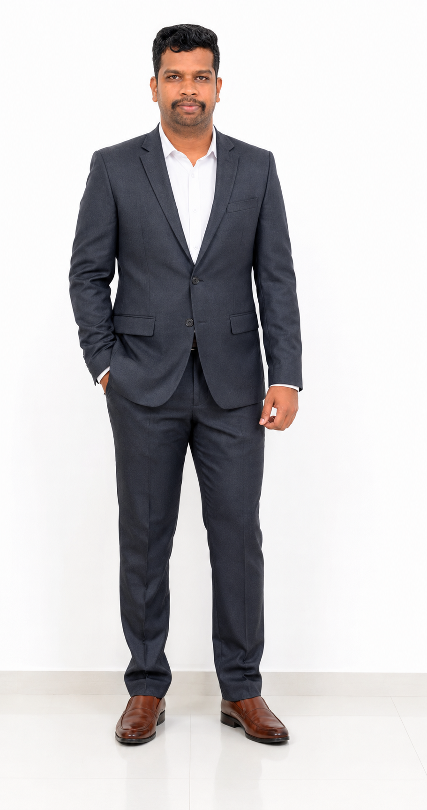

Research & Innovation
Research interests include superconducting digital electronics, quantum computation, advanced VLSI, machine learning, AI applications in signal processing and multispectral remote sensing for crop health monitoring.
Associate Professor, Department of Computer Science and Engineering at Aarupadai Veedu Institute of Technology, Vinayaka Mission’s Research Foundation (DU), Chennai, Tamil Nadu, India.
Researcher working across Artificial Intelligence, Machine Learning, remote sensing, superconducting electronics, quantum computation and engineering innovation.

Associate Professor · Computer Science & Engineering
Aarupadai Veedu Institute of Technology (AVIT)
Vinayaka Mission’s Research Foundation (DU)
Dynamic academic professional with experience spanning ECE, CSE, research coordination, innovation activities, teaching and industry-linked projects.
Research interests include superconducting digital electronics, quantum computation, advanced VLSI, machine learning, AI applications in signal processing and multispectral remote sensing for crop health monitoring.
Experience in R&D coordination, IIC Research and Climate Cell coordination, AICTE IDEA Lab activities, Smart India Hackathon and ideathon/hackathon coordination.
The CV records teaching across UG and PG programmes, 10+ courses, 800+ students and mentoring of student research projects with publication outcomes.
A portfolio connecting emerging computation with engineering, agriculture, climate and intelligent systems.
AI-driven crop health monitoring using multispectral remote sensing data, with current project work documented in the CV.
Machine learning applications using Earth observation and environmental data for agricultural intelligence and climate-related analysis.
Reconfigurable superconducting DFT/FFT processors, reciprocal quantum logic, AQFP and superconductive memory architectures.
Applied ML and deep learning across signal processing, cybersecurity, healthcare, forecasting and intelligent systems.
Advanced VLSI design, high-speed digital systems, digital signal processing architectures and embedded systems.
Research proposal writing, industry project collaboration, ideathon and hackathon coordination, FDP facilitation and startup/idea innovation activities.
The CV lists 35 SCI/Scopus-indexed publications and provides DOI information for many entries.
Aarupadai Veedu Institute of Technology (AVIT), Vinayaka Mission’s Research Foundation (DU), Chennai, Tamil Nadu, 603104, India.
Dhanalakshmi Srinivasan College of Engineering and Technology, Chennai. College R&D Coordinator; IIC Research and Climate Cell Coordinator; AICTE IDEA Lab Tech Guru; SIH/Ideathon/Hackathon Coordinator.
Saveetha School of Engineering, Chennai. Taught 10+ courses to 800+ UG/PG students; published 25+ SCI/Scopus-indexed papers during tenure; co-authored 8 patent applications.
SRM Institute of Science and Technology, Chennai. Supported core ECE laboratory courses reaching 400+ students.
Francis Xavier Engineering College, Tirunelveli. Time-table and event coordination; teaching and student mentoring.
Tamil Thaai Foundation, Iconic Award Ceremony, 2025.
Thamizh Amuthu Trust, Thiruvalluvar Award Ceremony, 2024.
BFEAM International Award Ceremony, 2022.
SRM Institute of Science and Technology, Dr Paarivendhar Research Colloquium, 2019.
Organized NOVOFORGE 2025, SIH internal hackathon and innovation-focused events listed in the CV.
IEEE, IEI, IAENG, ISTE and EFY memberships are listed in the CV.
For academic collaboration, research discussions, invited talks, student projects and professional communication.
Email
naren.sridhar@hotmail.com
Phone
+91 9884831644 / +91 7338916344
Location
Chennai, Tamil Nadu, India
Academic identifiers and professional networking profiles.
LinkedIn
Dr. S. Narendran